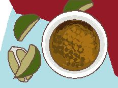

Home
Mojo Sauce

What is it?
"Mojo" means "sauce" in spanish, so "mojo sauce" is kind of a "chai tea" situation. Anyway, there are different versions, but this recipe is the cuban one, grabbed from Serious Eats.
Ingredients
- 8 cloves garlic, minced
- Kosher salt and freshly ground black pepper to taste
- 2/3 cup fresh sour orange juice, or 1/3 cup of fresh orange juice and 1/3 cup of fresh lime juice (see notes)
- 1/3 cup olive oil
- 1/2 teaspoon dried oregano
- 1/2 teaspoon cumin
How?
- Place garlic in mortar and pestle. Add 1/2 teaspoon of salt and work into a smooth paste.
- In a small bowl, whisk together garlic, sour orange juice, oil, oregano, and cumin. Season with salt and pepper to taste..
Notes: If you don't have access to sour oranges, using an equal mix of orange and lime or lemon juice will work as an adequate substitute.
Awesum sauce! Enjoy!